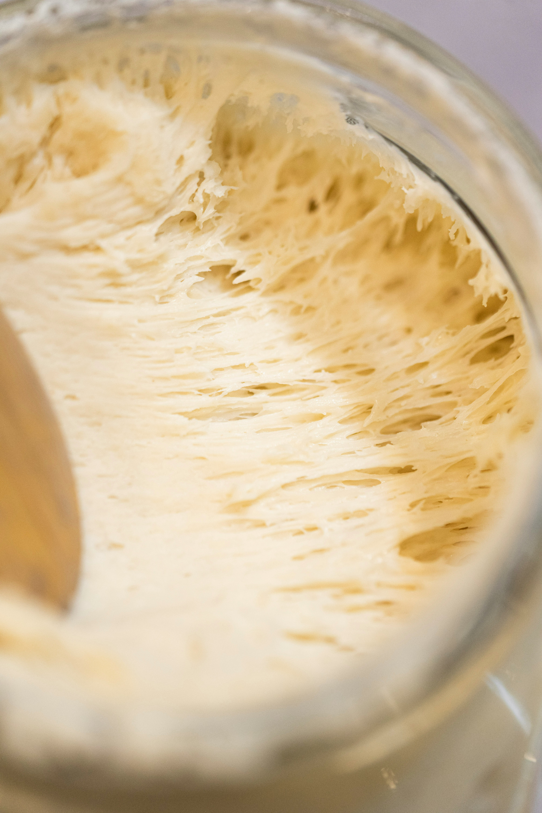

Meet "Penelope"
Every loaf at Crumb & Craft is leavened by Penelope, a wild yeast culture fed daily with organic unbleached flour and filtered spring water since 2022. No commercial yeasts allowed here!
We believe that slow fermentation isn't just a baking technique, it's a way to slow down. Our dough rests for up to 72 hours, developing complex flavors and a bubbly, open crumb that is exceptionally gentle on the tummy. 🤍


Hi, I'm Stephanie! ♡
What started as late-night stress baking during a search for wholesome, gut-friendly food quickly blossomed into a full-blown passion for ancient grains and wild fermentation.
When I'm not nursing my starter or sliding loaves into the oven at the crack of dawn, you can find me designing digital experiences or hanging out at the local weekend farmers market. Come say hi at Stall #12! 🌾
The Craft Behind the Crust
from grain to golden brown
The Feed
Penelope is fed and pampered until she's bubbly, active, and bursting with wild yeast.
Hand Mixing
Flour, water, and sea salt are gently hand-mixed. No automated machinery or chemical additives.
Long Cold Ferment
The dough undergoes a slow 48-to-72 hour cold retard in the fridge for maximum flavor development.
Wood-Fired Bake
Baked scorching hot to achieve our signature crackling, blistered dark crust and soft interior.